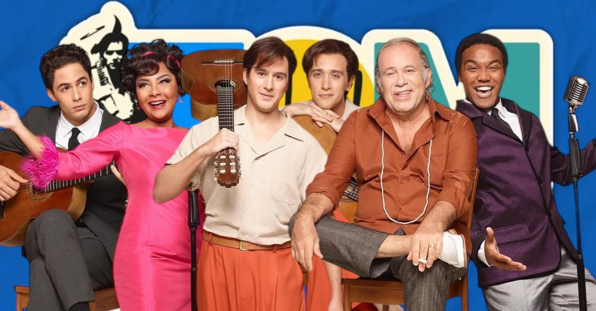

"Tom Jobim Musical" celebra o legado do maestro da Bossa Nova

No ano em que se completam três décadas desde sua morte, um emocionante musical sobre Tom Jobim leva o público a uma jornada pelo universo do maior ícone da música brasileira.
O Teatro Casa Grande, no Rio de Janeiro, abre as portas para a estreia de "Tom Jobim Musical", um espetáculo que homenageia a vida e obra de Antônio Carlos Jobim, o nome mais celebrado da Bossa Nova. Com dramaturgia assinada por Nelson Motta e Pedro Brício e direção de João Fonseca, a montagem traz o maestro soberano para o palco, explorando desde o início de sua carreira no Rio de Janeiro dos anos 1950 até o reconhecimento internacional em Nova York. Ao longo da peça, o público é conduzido por um repertório de clássicos, incluindo "Garota de Ipanema", "Desafinado" e "Wave", que marcaram a história da música global.
Com 27 atores e 15 músicos em cena, "Tom Jobim Musical" oferece uma experiência de imersão nas batidas da Bossa Nova e nas poesias que eternizaram o Brasil. A produção se destaca pelo rigor técnico e artístico, apresentando arranjos de Thiago Gimenes, Ivan de Andrade e Tiago Saul, além de uma concepção visual que une a cenografia de Natália Lana e Nello Marrese e o vídeo cenário de Batman Zavarese. O espetáculo conta ainda com coreografias de Bárbara Guerra e figurinos assinados por Theodoro Cochrane. Cada detalhe contribui para recriar o universo carioca que inspirou Jobim, ao mesmo tempo que traz ao palco uma reflexão sobre a relação de sua obra com a identidade cultural brasileira.
Segundo o dramaturgo Nelson Motta, Jobim personificava a essência musical do Brasil, estabelecendo uma conexão entre a natureza, a diversidade cultural e a musicalidade única do país. Em suas palavras, "Tom mudou o rumo e ritmo da música do mundo, tornando-a mais leve, solar e melodiosa." Em "Tom Jobim Musical", essa visão ganha vida por meio de canções que fizeram história e mostraram o talento brasileiro ao mundo. O espetáculo, produzido pela Bonus Track e Bárbaro! Produções com o apoio do Ministério da Cultura e patrocínio de BB Seguros, PRIO e MAPFRE, destaca-se por ser uma obra sobre música, mas também sobre resistência, inovação e identidade nacional.
Para Motta, a maior dificuldade em transformar a vida de Jobim em um musical foi a imensa qualidade de suas composições. "Nenhum musical da Broadway teve, tem ou terá um score musical à altura do maestro soberano Tom Jobim", comenta o dramaturgo. A trilha selecionada para o espetáculo reflete o espírito inovador de Jobim, combinando influências de mestres como Debussy e Cole Porter com a musicalidade de grandes nomes nacionais, como Dorival Caymmi e Ary Barroso.
"Tom Jobim Musical" não é apenas uma homenagem, mas um convite a redescobrir o orgulho de ser brasileiro e a revisitar a trajetória de um artista que usou a música como forma de expressão cultural e política. Por meio de canções atemporais, o espetáculo permite ao público se conectar com um dos maiores legados da música popular do século XX e mergulhar no impacto universal de Jobim, que, ao lado de Vinicius de Moraes e João Gilberto, difundiu a Bossa Nova para além das fronteiras brasileiras.
"Tom Jobim Musical" é uma oportunidade única para celebrar a memória do compositor e revisitar a obra de um artista que, como poucos, soube traduzir a alma brasileira e projetá-la ao mundo, em notas, melodias e um ritmo próprio que ecoa até hoje.